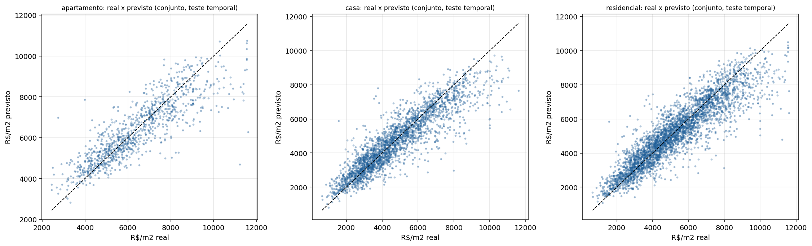
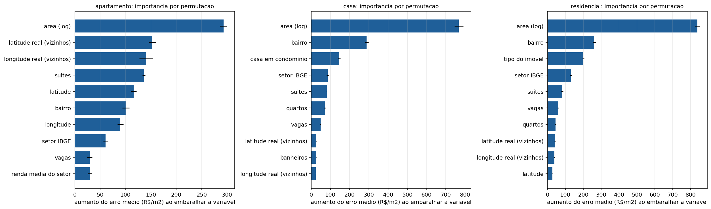
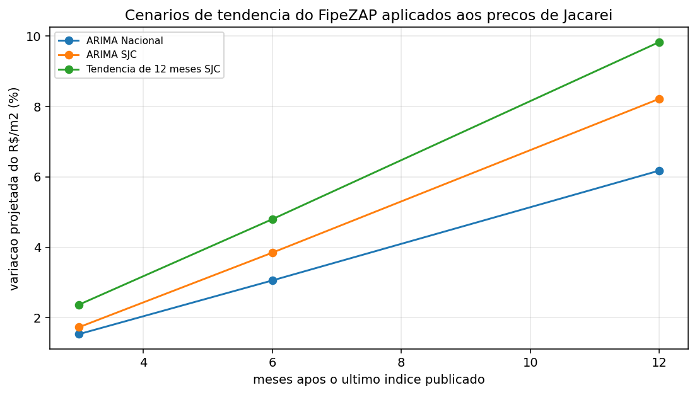

Previsão de preços de imóveis utilizando redes neurais LSTM a partir de dados imobiliários e indicadores macroeconômicos
Pedro de Moraes Machado · Tardelli Ronan Coelho Stekel (orientadora)Instituto Federal de São Paulo · Campus Jacareí
Apresentação B · Jacareí, SP
A perguntaUma rede neural prevê o preço melhor que um modelo tradicional?
Hipótese 1
A LSTM, que aprende padrões ao longo do tempo, erra menos que modelos tradicionais (ARIMA e regressão linear).
Hipótese 2
Incluir indicadores macroeconômicos (juros, inflação, crédito, câmbio) melhora a previsão da LSTM.
Como medimos: erro médio (MAE), raiz do erro quadrático (RMSE) e erro percentual (MAPE), comparando com os modelos tradicionais.
Os dadosSéries públicas de várias fontes, num único banco
49
séries (FipeZAP, BCB, IBGE, IPEA)
50
cidades no painel de treino
104
meses de São José dos Campos
0
falhas no teste de vazamento de dados
Por que SJC? Jacareí não está no FipeZAP. São José dos Campos é a cidade coberta mais próxima e entra como representante.
Sem trapaça no tempo: em cada mês, o modelo só usa o que já estava publicado naquela data ("as-of").
Indicadores: Selic, IPCA, INCC, câmbio (PTAX), IBC-Br, crédito imobiliário, confiança do consumidor e Selic real.
O métodoComo a LSTM foi testada
Entrada
últimos 12 meses do índice (e, em alguns casos, do macro)
→
LSTM
treinada em um painel de 50 cidades
→
Saída
variação de 1 a 12 meses à frente
Contra quem?
ARIMA
Tendência de 12 meses
Regressão linear, com e sem macro
Sem se enganar
12 redes × 5 sementes
Escolhe a variante nos 60% iniciais e confirma nos 40% finais
Teste de Diebold-Mariano
Resultado 1Erro de previsão (MAPE) por horizonte
clique na legenda para esconder modelos
SJC: aos 12 meses a LSTM sem macro erra 3,3% contra 5,4% do ARIMA, mas a diferença não é significativa (p = 0,13).
Nacional: o ARIMA vence (1,2% contra 1,7% aos 12 meses). A diferença é significativa de 1 a 6 meses (p < 0,05); aos 12 meses, p = 0,051.
Resultado 2O macro ajudou? A campeã não se confirmou
A variante com macro que ganhou na escolha (0,83) piorou na confirmação (1,34). A melhor sem macro ficou em 0,97.No índice nacional nenhuma rede com macro bateu o ARIMA: a pior chegou a 2,75× o erro dele.
LeituraO que esse resultado nos ensina
1 · Macro não ajudou
Com dados mensais é pouca informação: 104 meses são pouco para a rede aprender com 8 indicadores.
2 · ARIMA é duro
Em séries longas e suaves, como o índice nacional, o ARIMA continua difícil de bater.
3 · Cuidado ao escolher
Escolher o modelo olhando o próprio teste engana. Separar escolha e confirmação evitou um erro.
O que ainda dá para testar: macro com mais defasagens, frequência trimestral, e uma série própria de Jacareí (com recoletas periódicas).
Juntando as pontasDas características do imóvel ao preço em Jacareí



R² 0,80 (casas) e 0,73 (apartamentos) em teste no tempo; erro médio de 15% e 11%.
O que mais pesa: área, bairro e a localização fina (apartamentos).
Aplicando a tendência do índice aos preços de Jacareí: de +6% a +10% em 12 meses, conforme o cenário.
As características dos imóveis entram pelo modelo de preço; o índice dá a tendência no tempo. O VivaReal é uma fotografia, sem histórico para alimentar a LSTM.
DemonstraçãoVeja as séries no painel interativo
Abra a aba Séries temporais. Precisa de internet. Clique fora do painel para voltar às setas.
ConclusãoO que levamos desta pesquisa
O que descobrimos
A LSTM nem sempre vence o ARIMA
O macro não melhorou a previsão nestes dados
Testar do jeito certo evitou um falso ganho
Próximos passos
Série própria de Jacareí (recoletas)
Mais dados e macro com defasagem
Combinar tendência e modelo de preço
Código, dados e resultados abertos: github.com/Pedrocs50/imob-analytics
Obrigado!
Pedro de Moraes Machado · orientadora Tardelli Ronan Coelho StekelInstituto Federal de São Paulo · Campus Jacareí
github.com/Pedrocs50/imob-analytics
Perguntas?
JECET 2026 · Pedro de Moraes Machado
Slides (clique para ir)
Teclas: → ou clique avança · ← volta · F tela cheia · G esta lista · P notas e cronômetro · Tab alterna as abas · clique numa figura para ampliar